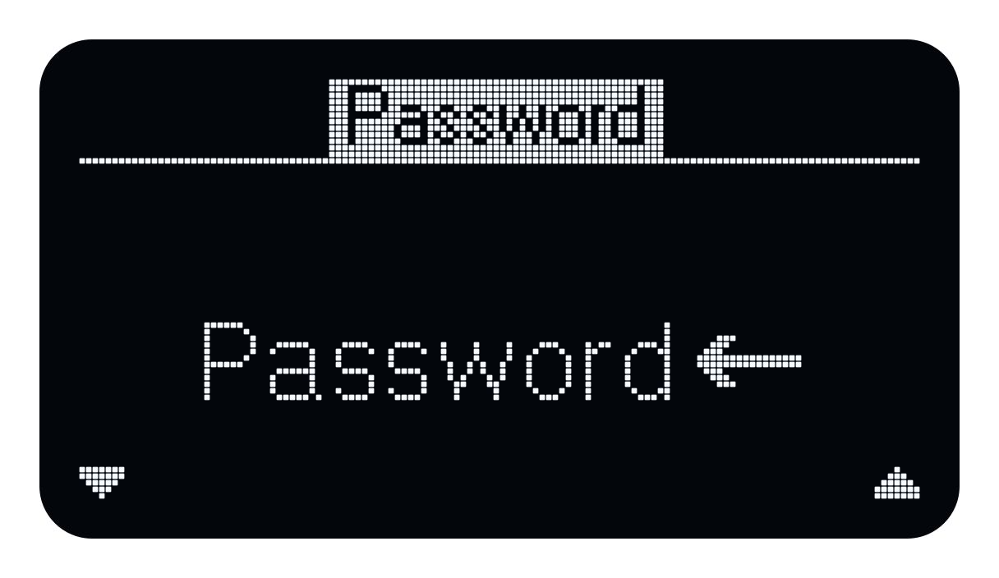
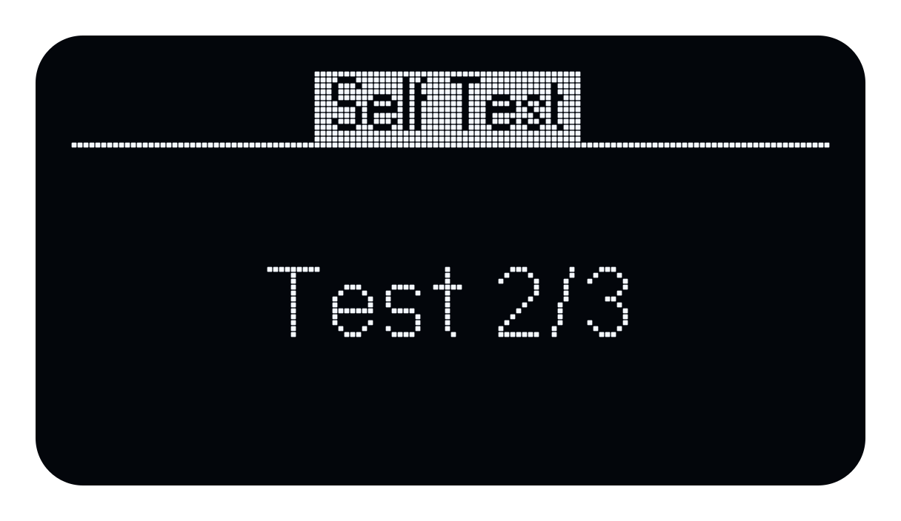
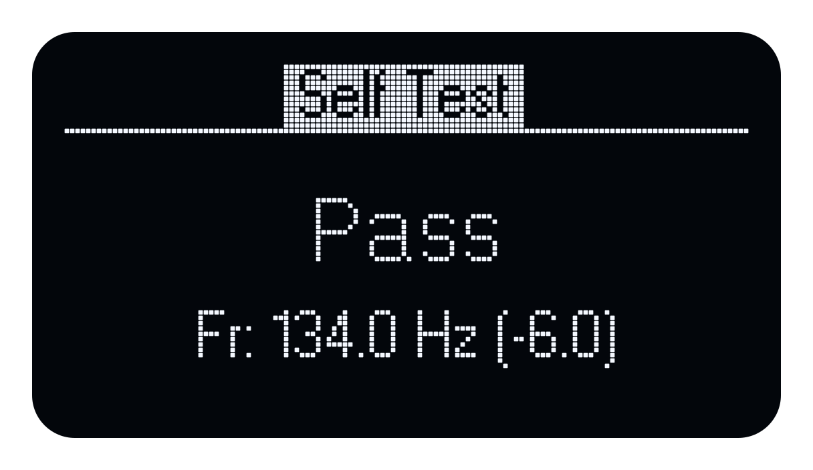
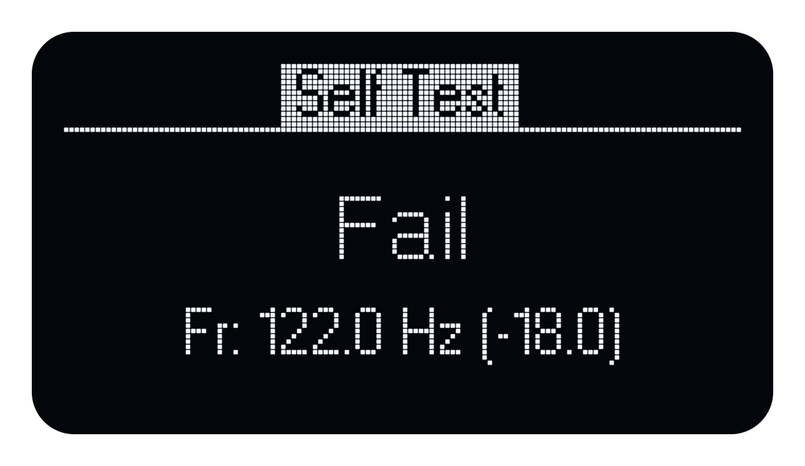

System Menu
On this page
Navigation
Press M on the Home screen to open the system menu. Use the L and R buttons, indicated by the arrows on the display, to move through the options. Press M to select an item.
In a submenu, select Back to return to the main menu. Select Exit to return to the Home screen, or press and hold M while a menu list is displayed. In a time or text editor, holding M cancels the entry and returns to its menu.
Entering a time
Time is entered as hours, minutes and seconds (hh:mm:ss). Use the down and up arrows to change the highlighted digit, then press M to accept it and move to the next digit. When you accept the final digit, the time is stored and Atlas returns to the menu. For Auto-off, a shorter enabled timeout is first raised to the 5-minute minimum for confirmation. Hold M to cancel without storing the proposed time.

Entering text
When entering a device or network password, use the arrow buttons to select a character and press M to accept it. To delete the previous character (backspace), select the left-pointing character and press M. When the text is complete, select the checkmark and press M to store it and return to the menu or connect to the network. To abort text entry, press and hold M.


The main menu contains Power, Output, Timer, Network, Service and Exit.
Power
| Item | Description |
|---|---|
| Off | Power off on battery; enter standby with the display off when USB power is attached. |
| Auto-off | Configure automatic power-off timer |
| Battery | Display battery information |
| USB | Display USB power information |
| Back | Return to previous menu |
| Exit | Return to Home screen |
Auto-off sets the automatic power-off timeout; 00:00:00 disables it. The minimum enabled timeout is 00:05:00 (5 minutes). If you enter a shorter nonzero time, the editor shows 00:05:00; press M again to confirm. Automatic power-off is suspended while USB power is attached. Disconnecting USB starts a fresh timeout. To stop playback after a chosen duration, use the separate playback timer.
With USB power connected, Off leaves Atlas in standby so battery charging can continue. Disconnecting USB while in standby switches the device fully off.
Output
| Item | Description |
|---|---|
| Speaker | Enable speaker output |
| BNC | Enable BNC output |
| Speaker+BNC | Enable both outputs |
Timer
| Item | Description |
|---|---|
| Timer | Enable or disable playback timer |
| Duration | Configure playback duration |
| Back | Return to previous menu |
| Exit | Return to Home screen |
The playback timer stops the signal after Duration; it does not select the sequence length or switch the device off. Check that Duration is set before enabling the timer.
Network
| Item | Description |
|---|---|
| Mode | Select Off, Station or Hotspot |
| Connect | Connect to an access point |
| Forget | Remove stored access point |
| Device pwd | Configure the device password |
| Info | Display network information |
| Back | Return to previous menu |
| Exit | Return to Home screen |
Service
| Item | Description |
|---|---|
| About | Display firmware information |
| Help | Display QR code linking to documentation |
| Update | Check for and install device software; see Software update. |
| Self-test | Run the loudspeaker resonance check; see Self-test. |
| Reset | Restart the device. This is not a factory reset and does not erase saved settings or user signals. |
| Back | Return to previous menu |
| Exit | Return to Home screen |
Software update
- Stop playback and any app-managed measurement. Connect a suitable USB power supply.
- Connect Atlas to a Wi-Fi network with internet access. A direct connection to its hotspot alone does not provide access to the update service.
- Open Menu → Service → Update and wait for the availability check.
- If Update to v… is offered, check the proposed version, select Yes with L or R and press M. Select No to return without installing.
- Allow downloading, writing and restart to finish. After reconnecting, check the installed version under Service → About.
No update means the check completed without an offered update. Update failure or Update failed means the operation did not complete; check power and internet connectivity before retrying. Device software updates are separate from updating DIRAC Field itself.
Self-test
The self-test checks the loudspeaker resonance using an internal test signal and compares the measured frequency with the stored reference. It is a functional check of the source; it does not calibrate the acoustic output or measure the room response.
- Stop ordinary playback and any measurement started from DIRAC Field. On Atlas, press M during playback to stop and return home.
- Perform the self-test in a quiet environment. Place Atlas in its normal operating position with the loudspeaker grilles unobstructed. Check that the battery is charged or a suitable USB supply is connected.
- Under Menu → Output, select Speaker. The speaker must be enabled for the resonance check; BNC-only output is unsuitable.
- Open Menu → Service, select Self-test and press M. The test starts immediately and plays a test signal. No external microphone or DIRAC Field recording is required.
- Wait for the three measurements. The display is titled Self Test and shows Test 1/3, Test 2/3 and Test 3/3 while measuring.
- Read the result, then press M to return to Service. Restore your required output selection before resuming normal operation.


| Result | Meaning and action |
|---|---|
| Pass | The measured resonance is within the stored tolerance of the reference frequency. |
| Fail with Fr | A resonance was measured, but it lies outside the stored tolerance. Record the frequency and difference, check the preparation and repeat the test. Contact Acoustics Engineering if the result persists. |
| Fail without Fr | The test could not produce a usable measurement. Check that ordinary playback is stopped and Speaker output is selected, then retry. This message alone does not identify a defective loudspeaker. |
After a completed measurement, Fr: … Hz (…) gives the measured resonance frequency, followed in parentheses by the difference from the stored reference, also in hertz. A negative difference means the resonance is below the reference. The reference frequency and tolerance are factory settings and cannot be changed by the user. The displayed numbers are not sound levels.
The illustrations show an Echo self-test and are shared here as examples of the Atlas display layout. The readings are examples; the comparison uses the factory reference and tolerance for your Atlas.



